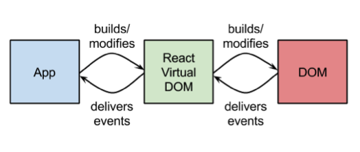
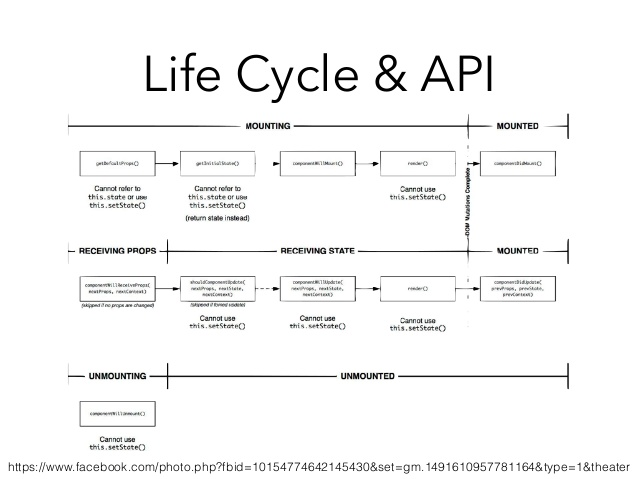

By implementing and leverage virtual dom, React can change the parts that need to be changed and then batch save to the real DOM tree. i.e.

What makes it really fast:
Efficient diff algorithms.

Batching DOM read/write operations.
Facebook, Instagram, WalMart, Wordpress, and more
Must include these two libraries in order to use React
https://fb.me/react-0.14.6.js
https://fb.me/react-dom-0.14.6.jsIt is essential to know JSX but not required.
https://cdnjs.cloudflare.com/ajax/libs/babel-core/5.8.24/browser.jsSample: w/, w/o, w/ and w/o JSX side by side
